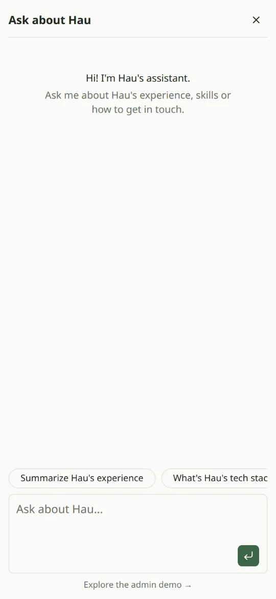
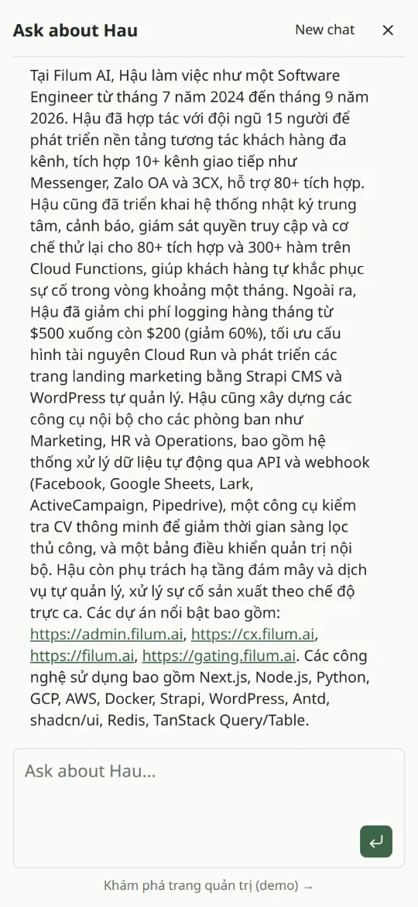

DỰ ÁN AI · 2026
Ask about Hau
Trợ lý chat trả lời câu hỏi của người xem về mình, chỉ dựa trên CV, chạy bằng mô hình local, có trang quản trị để tinh chỉnh.
- Next.js 16
- TypeScript
- Vercel AI SDK
- Ollama
- PostgreSQL
- pgvector
- Drizzle ORM
- Better Auth
- shadcn/ui
- Vitest
Chưa triển khai công khai. Mã nguồn để ở repository riêng tư.

Giới thiệu
Nhà tuyển dụng hay khách hàng thường có vài câu hỏi nhanh: mình đã làm gì, dùng công nghệ gì, liên hệ thế nào. Mình muốn portfolio trả lời được ngay, mà không bịa thông tin.
Trợ lý chỉ trả lời dựa trên CV (và tài liệu mình tải lên), đổi giọng theo người hỏi, và chạy mô hình mã nguồn mở qua Ollama ngay trên máy của mình.
Có gì
Chỉ trả lời theo CV
Bộ quy tắc giữ câu trả lời trong phạm vi CV. Câu hỏi lạc đề được từ chối lịch sự và kéo về chủ đề chính.
Hiểu người hỏi
Nhận diện người xem là nhà tuyển dụng, khách hàng hay lập trình viên, rồi chọn mô hình, tham số và giọng văn phù hợp.
Thu thập liên hệ
Khi người xem để lại tên và email hoặc số điện thoại, hệ thống lưu thành lead có trạng thái, ghi chú, xuất CSV.
Trang quản trị
Phiên chat, lead, quy tắc, kỹ năng, profile và mô hình, câu khảo sát, kiến thức, prompt và giao diện widget, đều sửa trực tiếp được.
Widget nhúng
Một thẻ script là gắn được khung chat vào trang web được cho phép. Portfolio này là nơi đầu tiên dùng.
Demo chỉ xem
Tài khoản xem chung cho phép khách khám phá trang quản trị, mọi nút điều khiển đều bị khoá.
Kỹ thuật
- Xử lý hai bướcMột lần gọi structured output ngắn phân tích tin nhắn (loại người xem, thông tin liên hệ, lời từ chối), sau đó câu trả lời được stream theo profile tương ứng.
- RAGTài liệu PDF, Markdown, CSV được làm sạch, chia đoạn, tạo embedding local bằng bge-m3 và tìm kiếm bằng pgvector.
- Đánh giá (evals)Bộ câu hỏi cố định, chấm bằng kiểm tra cứng (phải có, không được có, đúng ngôn ngữ) và một mô hình giám khảo local về độ chính xác, giọng văn, phạm vi.
- Chạy được GPU nhỏSinh hết câu trả lời rồi mới chấm, nên mỗi mô hình chỉ nạp một lần, vừa với GPU 4 GB.
- Đăng nhập & phân quyềnPhiên đăng nhập bằng Better Auth với vai trò admin và viewer chỉ xem; server từ chối mọi thao tác ghi của viewer.
- An toànGiới hạn tần suất theo từng client trong bộ nhớ, chống gửi trùng tin nhắn, chỉ cho phép các trang trong danh sách nhúng widget.
- Kiểm thửBộ test Vitest cho chat, admin, database, routing, kiến thức, widget và evals, chạy trên database test riêng.
Hình ảnh

